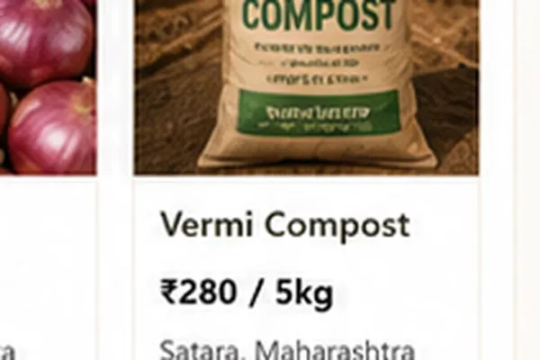

Inventory
Listing stock
Current stock is based on your product listings. Full inventory history and automatic order-based stock changes will appear after inventory tracking is connected.

Inventory
Current stock is based on your product listings. Full inventory history and automatic order-based stock changes will appear after inventory tracking is connected.
